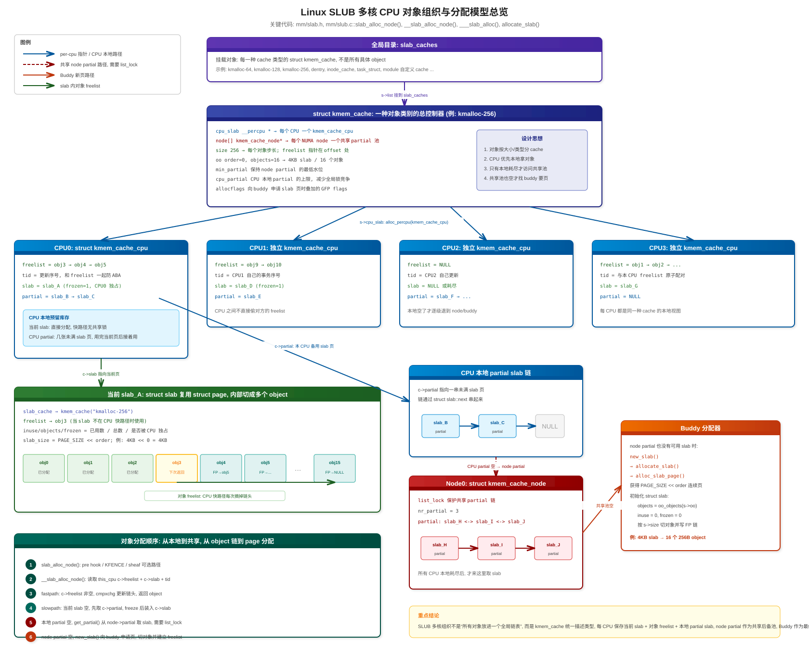
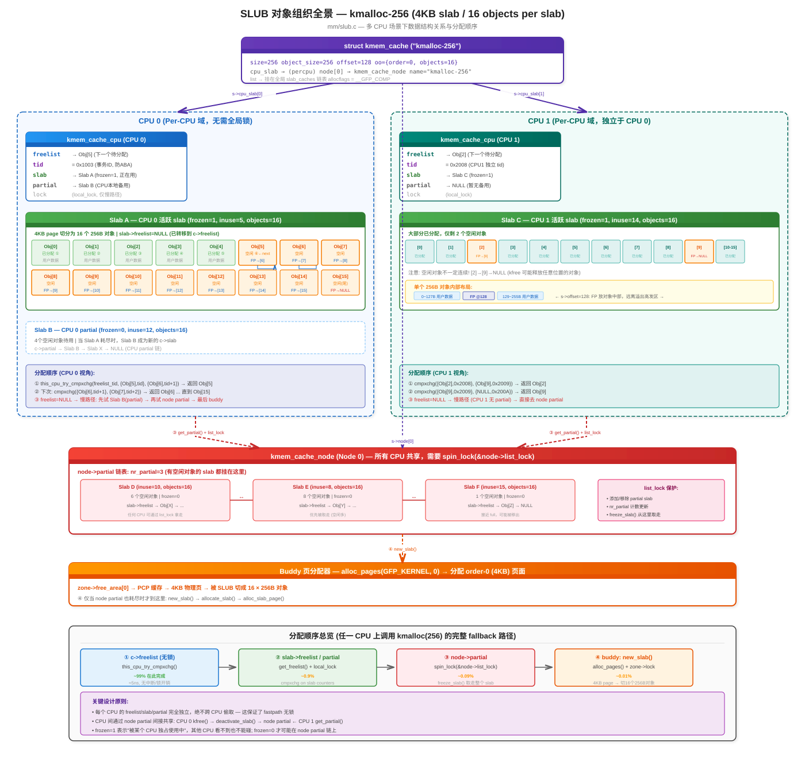
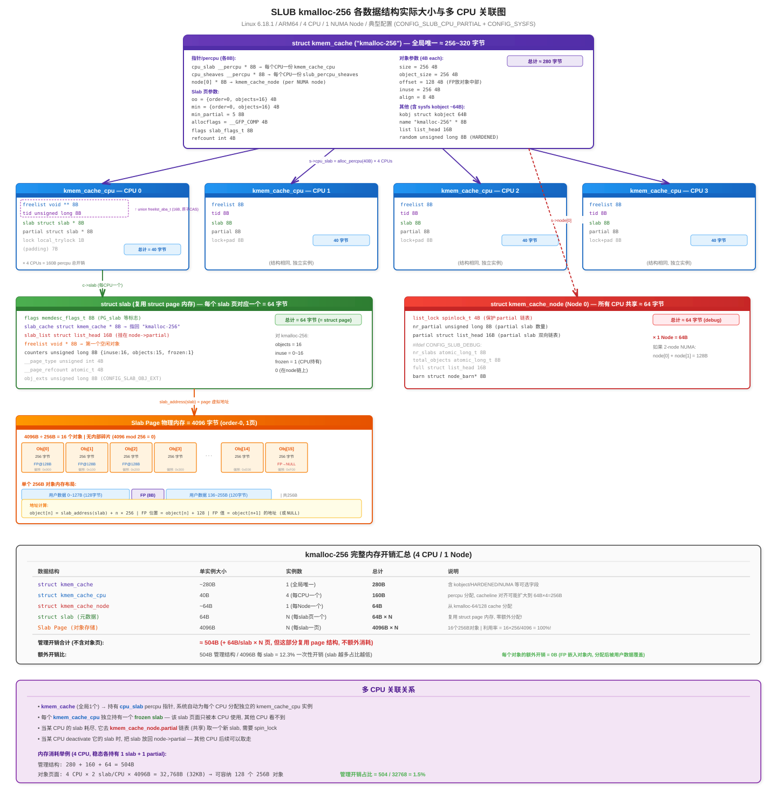
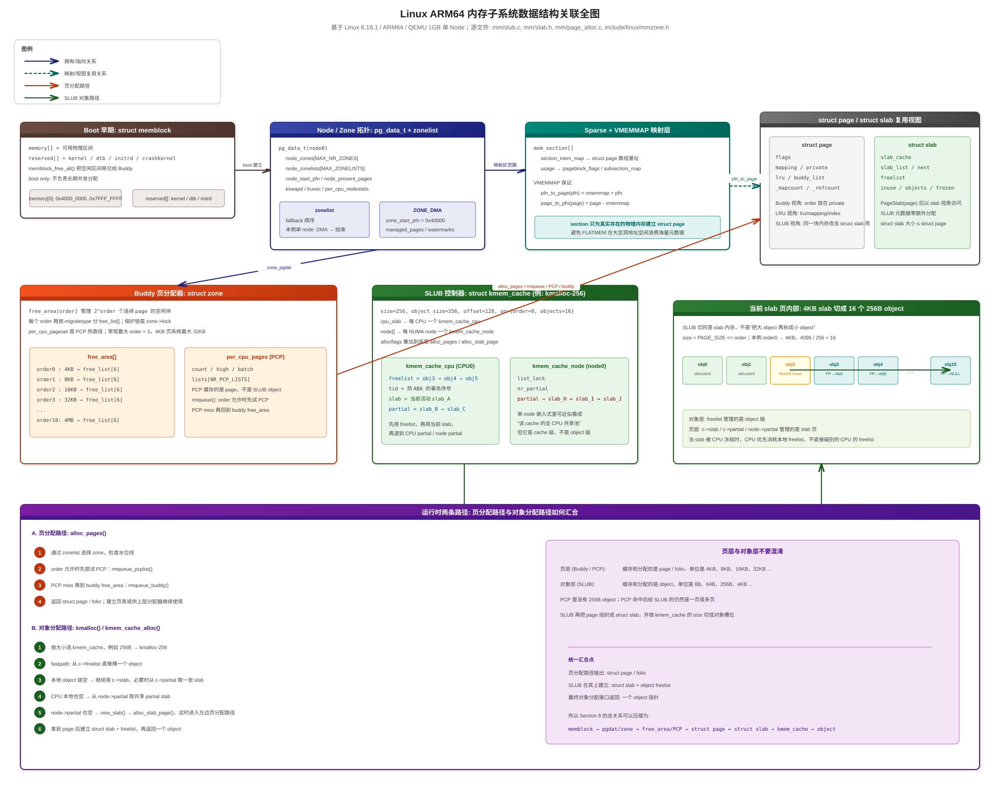

基于 Linux 6.18.1 / ARM64 / QEMU 1GB
┌─────────────────────────────────────────────────────────────────────────┐
│ │
│ 用户态 malloc() 内核态 kmalloc() │
│ │ │ │
│ ▼ ▼ │
│ glibc (brk/mmap) ┌──────────────┐ │
│ │ │ SLUB 分配器 │ kmem_cache_alloc │
│ ▼ │ (小对象管理) │ │
│ 系统调用 → 缺页异常 └──────┬───────┘ │
│ │ │ alloc_pages() │
│ │ 直接分配页 │ │
│ └──────────┐ │ │
│ ▼ ▼ │
│ ┌──────────────────────────────┐ │
│ │ Buddy 分配器 │ __alloc_pages() │
│ │ (页帧管理, 4KB~4MB) │ │
│ └──────────────┬───────────────┘ │
│ │ 通过 zone->free_area[] 管理 │
│ ▼ │
│ ┌─────────────────────────────┐ │
│ │ Zone 层 │ │
│ │ DMA | DMA32 | Normal | ... │ │
│ └─────────────┬───────────────┘ │
│ │ 属于 │
│ ▼ │
│ ┌─────────────────────────────┐ │
│ │ NUMA Node (pgdat) │ │
│ │ pg_data_t per node │ │
│ └─────────────┬───────────────┘ │
│ │ 通过 mem_section 映射 │
│ ▼ │
│ ┌─────────────────────────────┐ │
│ │ Sparse Memory Model │ │
│ │ mem_section → struct page │ │
│ └─────────────┬───────────────┘ │
│ │ 接管自 │
│ ▼ │
│ ┌─────────────────────────────┐ │
│ │ Memblock (早期启动) │ boot 完成后废弃 │
│ │ memory[] + reserved[] │ │
│ └─────────────────────────────┘ │
└─────────────────────────────────────────────────────────────────────────┘struct memblock {
bool bottom_up; // 分配方向：自底向上 or 自顶向下
phys_addr_t current_limit; // 当前分配上限
struct memblock_type memory; // 可用物理内存集合
struct memblock_type reserved; // 已预留内存集合
};
struct memblock_type {
unsigned long cnt; // region 数量
unsigned long max; // region 数组容量
phys_addr_t total_size; // 总大小
struct memblock_region *regions; // region 数组
char *name; // "memory" 或 "reserved"
};
struct memblock_region {
phys_addr_t base; // 起始物理地址
phys_addr_t size; // 大小
enum memblock_flags flags; // HOTPLUG/MIRROR/NOMAP 等
int nid; // NUMA node ID
};struct memblock (全局唯一，静态初始化)
├── memory (memblock_type)
│ └── regions[] ──→ [region0: base=0x4000_0000, size=0x4000_0000, nid=0]
│ [region1: ...]
└── reserved (memblock_type)
└── regions[] ──→ [region0: kernel代码/DTB/initrd 等]
[region1: ...]
空闲内存 = memory 中未被 reserved 覆盖的部分| 特性 | 说明 |
|---|---|
| 为什么需要 | 内核启动最早期，buddy/slab 都还没建立，需要一个极简分配器 |
| 核心思想 | 两个有序数组（memory + reserved）描述物理内存布局 |
| 分配方式 | 遍历 memory[]，跳过 reserved[]，找到空闲区间 |
| 局限性 | 线性扫描 O(n)、无并发保护、无 order 分级、无法回收碎片 |
| 生命周期 | memblock_free_all() 后移交 buddy，随后 memblock_discard() 释放自身 |
typedef struct pglist_data {
// ====== Zone 管理 ======
struct zone node_zones[MAX_NR_ZONES]; // 本 node 的所有 zone
struct zonelist node_zonelists[MAX_ZONELISTS]; // 分配 fallback 列表
int nr_zones; // 已填充的 zone 数
// ====== 物理范围 ======
unsigned long node_start_pfn; // 本 node 起始 PFN
unsigned long node_present_pages; // 实际物理页数（扣除空洞）
unsigned long node_spanned_pages; // 跨越的 PFN 范围（含空洞）
int node_id; // NUMA node 编号
// ====== 内存回收 ======
struct task_struct *kswapd; // 页回收守护进程
wait_queue_head_t kswapd_wait;
struct lruvec __lruvec; // LRU 链表集合（非 memcg 时使用）
// ====== 其他 ======
unsigned long totalreserve_pages; // 预留页数
struct per_cpu_nodestat __percpu *per_cpu_nodestats;
} pg_data_t;struct zonelist {
struct zoneref _zonerefs[MAX_ZONES_PER_ZONELIST + 1];
};
struct zoneref {
struct zone *zone; // 指向具体 zone
int zone_idx; // zone 类型索引
};pg_data_t (node 0)
│
├── node_zones[MAX_NR_ZONES]
│ ├── [ZONE_DMA] zone_start_pfn=0x40000, spanned=262144页 (1GB)
│ ├── [ZONE_DMA32] 空 (1GB 全在 DMA 范围)
│ ├── [ZONE_NORMAL] 空
│ └── [ZONE_MOVABLE] 空
│
├── node_zonelists[2]
│ ├── [ZONELIST_FALLBACK] → DMA → (结束)
│ └── [ZONELIST_NOFALLBACK] → DMA → (结束) (仅 NUMA 时有意义)
│
├── node_start_pfn = 0x40000
├── node_present_pages = 262144 (1GB / 4KB)
└── kswapd → (内核线程指针)| 特性 | 说明 |
|---|---|
| 为什么需要 pgdat | 描述一个 NUMA 节点的完整内存视图，即使 UMA 也有一个 node |
| 为什么需要 zone | 不同硬件（DMA 控制器、32位设备）对物理地址有不同约束 |
| 为什么需要 zonelist | 分配时当前 zone 不够用，需要按优先级 fallback 到其他 zone/node |
| NUMA 距离排序 | zonelist 中远 node 排后面，保证局部性优先 |
struct mem_section {
unsigned long section_mem_map; // 编码了 struct page 数组基地址 + flags
struct mem_section_usage *usage; // pageblock_flags + subsection_map
};
struct mem_section_usage {
struct rcu_head rcu;
DECLARE_BITMAP(subsection_map, SUBSECTIONS_PER_SECTION); // 子section 存在位图
unsigned long pageblock_flags[0]; // 每个 pageblock 的迁移类型标记
}; 全局数组: mem_section[][]
(二级数组，EXTREME模式下按需分配root)
section_nr ──→ mem_section[root][offset]
│
├── section_mem_map ──→ struct page 数组
│ （通过 VMEMMAP 映射到虚拟地址连续区域）
│
│ PFN → struct page 的转换：
│ page = vmemmap + pfn
│ pfn = page - vmemmap
│
└── usage
├── subsection_map[]: 哪些 2MB 子块实际有物理内存
└── pageblock_flags[]: 每个 pageblock 的迁移类型
(UNMOVABLE/MOVABLE/...)
ARM64 典型参数：
SECTION_SIZE_BITS = 27 → 每个 section = 128MB = 32768 页
PAGES_PER_SECTION = 32768
SUBSECTIONS_PER_SECTION = 64 (每个 subsection = 2MB)
pageblock_order = 9 (每个 pageblock = 2MB = 512页)物理地址空间 虚拟地址空间 (vmemmap 区域)
┌────────────┐ ┌──────────────────────┐
│ 0x40000000 │ PFN=0x40000 ───→ │ vmemmap + 0x40000 │ struct page[0]
│ 0x40001000 │ PFN=0x40001 ───→ │ vmemmap + 0x40001 │ struct page[1]
│ ... │ │ ... │
│ 0x7FFFF000 │ PFN=0x7FFFF ───→ │ vmemmap + 0x7FFFF │ struct page[N]
└────────────┘ └──────────────────────┘
pfn_to_page(pfn) = vmemmap + pfn (一次加法，O(1))
page_to_pfn(page) = page - vmemmap (一次减法，O(1))| 特性 | 说明 |
|---|---|
| 为什么需要 Sparse | 物理内存可以有大量空洞（热插拔、NUMA），FLATMEM 会为空洞也分配 struct page，浪费大量内存 |
| Section 的意义 | 按固定粒度（128MB）管理，只有有物理内存的 section 才分配 struct page |
| VMEMMAP 的作用 | 利用页表映射，让 pfn_to_page() 仍然是 O(1) 的数组下标访问 |
| pageblock_flags | 记录每个 2MB 块的迁移类型，buddy 分配器用来做反碎片决策 |
| subsection_map | 支持比 section 更细粒度（2MB）的内存热插拔 |
struct zone {
// ====== 水位线 ======
unsigned long _watermark[NR_WMARK]; // MIN/LOW/HIGH/PROMO 四级水位
unsigned long watermark_boost;
long lowmem_reserve[MAX_NR_ZONES]; // 为低端 zone 保留的页数
// ====== 核心：Buddy 空闲链表 ======
struct free_area free_area[NR_PAGE_ORDERS]; // [11] order 0~10
spinlock_t lock; // 保护 free_area
// ====== Per-CPU 页缓存 ======
struct per_cpu_pages __percpu *per_cpu_pageset;
// ====== 范围信息 ======
unsigned long zone_start_pfn;
unsigned long spanned_pages; // 跨越范围（含空洞）
unsigned long present_pages; // 实际页数
atomic_long_t managed_pages; // buddy 管理的页数（= present - reserved）
struct pglist_data *zone_pgdat; // 反向指针到所属 node
const char *name; // "DMA"/"Normal"/...
};
struct free_area {
struct list_head free_list[MIGRATE_TYPES]; // 按迁移类型分的空闲链表
unsigned long nr_free; // 本 order 空闲块数
};
// 迁移类型
enum migratetype {
MIGRATE_UNMOVABLE, // 0: 内核常驻分配
MIGRATE_MOVABLE, // 1: 用户页面，可迁移
MIGRATE_RECLAIMABLE, // 2: 页缓存，可回收
MIGRATE_PCPTYPES, // 3: PCP 只缓存以上三种
MIGRATE_HIGHATOMIC=3, // 3: 高优先级原子分配预留
MIGRATE_CMA, // 4: CMA 连续内存预留
MIGRATE_ISOLATE, // 5: 隔离中（热插拔/compaction）
MIGRATE_TYPES // 6: 总数，用作数组大小
};
struct per_cpu_pages {
spinlock_t lock;
int count; // 当前缓存页数
int high; // 高水位，超过则归还 buddy
int batch; // 每次批量操作的页数
struct list_head lists[NR_PCP_LISTS]; // per-migratetype × per-order 链表
};struct zone (以 ZONE_DMA 为例)
│
├── free_area[0] (order-0, 4KB 块)
│ ├── free_list[UNMOVABLE] ──→ page ←→ page ←→ ...
│ ├── free_list[MOVABLE] ──→ page ←→ page ←→ ...
│ ├── free_list[RECLAIMABLE]──→ (空)
│ ├── free_list[HIGHATOMIC] ──→ (空)
│ ├── free_list[CMA] ──→ (空)
│ ├── free_list[ISOLATE] ──→ (空)
│ └── nr_free = 1
│
├── free_area[1] (order-1, 8KB 块)
│ ├── free_list[...] ──→ ...
│ └── nr_free = 2
│
├── ...
│
├── free_area[9] (order-9, 2MB 块)
│ └── nr_free = 7
│
└── free_area[10] (order-10, 4MB 块, 最大)
├── free_list[MOVABLE] ──→ page ←→ page ←→ ... (223个)
└── nr_free = 223
/proc/buddyinfo 输出对照：
Node 0, zone DMA: 1 2 4 3 3 4 5 6 10 7 223
^order0 ... ^order10分配 alloc_pages(gfp, order):
┌─────────────────────────────────────────┐
│ 1. 选择 zone (通过 zonelist fallback) │
│ 2. 检查水位线 (_watermark[WMARK_LOW]) │
│ 3. 优先从 PCP 取 (order=0 时) │
│ 4. 从 free_area[order] 取 │
│ └─ __rmqueue_smallest(): │
│ 从 order 往上找第一个非空 free_list │
│ 取出 page, 多余的部分 expand() 拆分│
│ 放回低 order 的 free_list │
└─────────────────────────────────────────┘
释放 __free_pages(page, order):
┌─────────────────────────────────────────┐
│ 1. free_pages_prepare() 清理元数据 │
│ 2. __free_one_page(): │
│ while (order < MAX_PAGE_ORDER) { │
│ buddy = pfn ^ (1 << order) │
│ if (buddy 空闲) 合并, order++ │
│ else break │
│ } │
│ 3. __add_to_free_list(page, zone, │
│ order, migratetype) │
└─────────────────────────────────────────┘| 特性 | 说明 |
|---|---|
| 为什么用 Buddy | 快速合并/拆分连续页块，O(1) 找伙伴（XOR 操作），避免外部碎片 |
| 为什么分 order | 支持 2^N 页的连续分配，拆分和合并都只需移动链表指针 |
| 为什么分 migratetype | 把可迁移/不可迁移的页分开管理，减少内存碎片（反碎片策略） |
| 为什么有 PCP | 热路径（order-0）避免频繁获取 zone->lock，提高多核性能 |
| 水位线的作用 | MIN: 紧急保底；LOW: 唤醒 kswapd；HIGH: kswapd 停止回收 |
struct kmem_cache {
// ====== Per-CPU 快速路径 ======
struct kmem_cache_cpu __percpu *cpu_slab;
// ====== 对象参数 ======
unsigned int size; // 含元数据的对象大小
unsigned int object_size; // 用户请求的对象大小
unsigned int offset; // freelist 指针在对象内的偏移
unsigned int inuse; // 对象有效数据末尾偏移
unsigned int align; // 对齐要求
// ====== Slab 页参数 ======
struct kmem_cache_order_objects oo; // 优选：order + objects_per_slab
struct kmem_cache_order_objects min; // 最小：内存紧张时的退化参数
gfp_t allocflags; // 向 buddy 申请页时的 GFP flags
const char *name; // 缓存名称，如 "kmalloc-64"
struct list_head list; // 全局 slab_caches 链表
// ====== Per-Node 管理 ======
struct kmem_cache_node *node[MAX_NUMNODES];
};
struct kmem_cache_cpu { // Per-CPU，无锁快速路径
void **freelist; // 当前 slab 的空闲对象链
unsigned long tid; // 事务 ID（防 ABA）
struct slab *slab; // 当前正在分配的 slab
struct slab *partial; // CPU 本地 partial slab 链
};
struct kmem_cache_node { // Per-Node
spinlock_t list_lock;
unsigned long nr_partial; // partial slab 数量
struct list_head partial; // partial slab 链表
};
struct slab { // 复用 struct page 的内存布局
memdesc_flags_t flags;
struct kmem_cache *slab_cache; // 所属 kmem_cache
struct list_head slab_list; // 挂在 node->partial 上
void *freelist; // 第一个空闲对象
unsigned inuse:16; // 已分配对象数
unsigned objects:15; // 总对象数
unsigned frozen:1; // 是否被 CPU 冻结（正在使用）
};完整模型图: 结合struct kmem_cache、struct kmem_cache_cpu、struct kmem_cache_node、struct slab与slab_alloc_node()分配路径，展示多核 CPU 上 SLUB 对象如何按 CPU 本地、Node 共享池、Buddy 后备页源逐级组织:

完整结构图: 以kmalloc-256(4KB slab / 16 objects) 为例，展示多 CPU 下的对象组织与分配顺序，参见:

struct kmem_cache ("kmalloc-64")
│
├── cpu_slab (Per-CPU) ──────────────────────────────────────────
│ │ │
│ │ CPU 0 CPU 1 │
│ │ ┌──────────────────┐ ┌──────────────────┐ │
│ │ │ freelist ──→ obj │ │ freelist ──→ obj │ │
│ │ │ slab ──→ [slab页]│ │ slab ──→ [slab页]│ │
│ │ │ partial ──→ ... │ │ partial ──→ ... │ │
│ │ └──────────────────┘ └──────────────────┘ │
│ │ 无锁 cmpxchg 分配 无锁 cmpxchg 分配 │
│ └──────────────────────────────────────────────────────────┘
│ ↑ 2.从 partial 补充
│ │
├── node[0] (Per-Node)
│ ├── partial ──→ slab ←→ slab ←→ slab (有空闲对象的 slab)
│ └── nr_partial = 3
│ ↑ 3.从 buddy 申请新 slab
│ │
└── (buddy allocator: alloc_pages)kmalloc(64, GFP_KERNEL)
│
▼
kmem_cache_alloc(kmalloc_caches[64], ...)
│
▼
┌─ 快速路径 (this_cpu, 无锁) ─────────────────────┐
│ 1. freelist = cpu_slab->freelist │
│ 2. if (freelist != NULL) │
│ object = freelist │
│ cpu_slab->freelist = *(void**)freelist │
│ return object ← 99% 走这条 │
└──────────────────────────────────────────────────┘
│ freelist 为空
▼
┌─ 慢速路径 ──────────────────────────────────────┐
│ 3. 检查 cpu_slab->partial，有则换一个 slab │
│ 4. 检查 node->partial，有则取一个 slab │
│ 5. 都没有 → alloc_pages() 从 buddy 申请新页 │
│ 初始化为 slab，切割成对象，设置 freelist │
└──────────────────────────────────────────────────┘以kmalloc-256(4KB page / 16 objects / 4 CPU / 1 Node) 为例，各数据结构的实际内存开销:

| 特性 | 说明 |
|---|---|
| 为什么需要 SLUB | Buddy 最小分配 4KB，内核大量 64B/128B 小对象会极度浪费 |
| Per-CPU freelist | 无锁快速路径，cmpxchg 原子操作，每次分配约 20ns |
| 三级缓存 | CPU → Node partial → Buddy，逐级升级，兼顾速度和内存利用率 |
| 对象复用相同大小 | kmalloc-8/16/32/64/... 等 size class 避免碎片 |
| struct slab 复用 struct page | 不额外分配管理结构，零开销 |
struct page 是整个内存子系统的最核心数据结构，通过 union 复用同一块内存给不同子系统使用：
struct page { // 64 字节 (ARM64)
memdesc_flags_t flags; // 8B: zone | node | section | PG_xxx 标志位
union { // 40B: 以下几种身份互斥
struct { /* Buddy / LRU 页 */
struct list_head buddy_list; // 挂在 free_area[order].free_list 上
struct address_space *mapping;
unsigned long private; // buddy: 存储 order
};
struct { /* SLUB slab 页 (通过 struct slab 视图访问) */
struct list_head slab_list; // 挂在 node->partial
void *freelist; // 空闲对象链头
unsigned inuse:16; // 已分配对象数
unsigned objects:15; // 总对象数
};
struct { /* 复合页尾页 */
unsigned long compound_head; // 指向首页，bit0=1 标记尾页
};
};
union { // 4B
unsigned int page_type; // 页类型（typed folios）
atomic_t _mapcount; // 页表映射计数 (-1=未映射)
};
atomic_t _refcount; // 4B: 引用计数
}; ┌─────────── struct page ───────────┐
│ │
┌──────────┼──────────────┬────────────────────┐│
│ │ │ ││
▼ ▼ ▼ ▼│
Buddy SLUB LRU/PageCache Compound
空闲页 slab页 用户/文件页 复合页尾
buddy_list slab_list lru compound_head
private freelist mapping (指向head)
(=order) inuse/objects index
PageBuddy PG_slab PG_lru| 特性 | 说明 |
|---|---|
| Union 复用 | 一个页同一时刻只有一种身份，union 节省内存（每 4KB 物理页 = 64B struct page） |
| flags 编码 | 高位存 section/node/zone，低位存 PG_xxx 状态标志，一个字段多用 |
| 零分配管理 | struct page 本身由 sparse/vmemmap 管理，不需要额外分配 |
完整关联图: 把启动期memblock、运行期pg_data_t/zone/free_area/PCP、mem_section/vmemmap/struct page、以及kmem_cache/kmem_cache_cpu/kmem_cache_node/struct slab放到一张图里，强调“页层”和“对象层”是如何汇合的:

阅读这张图时，可以按下面 4 层去看：
memblock 只负责描述物理区间，memblock_free_all() 之后把空闲页交给 Buddy。pg_data_t/zone/free_area/PCP 管理的是 page，不是 SLUB object；alloc_pages() 在这里完成 zonelist 选择、水位线检查、PCP 和 buddy 取页。mem_section + vmemmap 提供 pfn_to_page()/page_to_pfn() 的 O(1) 转换，struct page 由此成为所有子系统共享的页元数据载体。kmem_cache 统一描述对象类型，kmem_cache_cpu 负责 per-CPU freelist/slab/partial，kmem_cache_node.partial 是同一 cache 的 node 级共享池；当 SLUB 需要新 slab 时，才重新掉回左边的页分配路径。这张图还额外强调了一个经常混淆的点：
alloc_slab_page() 命中了 PCP，SLUB 拿到的仍然是一页或多页，随后才会建立 struct slab 并按 kmem_cache->size 切出对象槽位。 固件/DTB 提供物理内存信息
│
▼
┌─────────────────────────────────────────┐
│ 1. memblock_add(base, size) │ 建立 memblock.memory[]
│ memblock_reserve(kernel, dtb, ...) │ 建立 memblock.reserved[]
└─────────────────────┬───────────────────┘
│
▼
┌─────────────────────────────────────────┐
│ 2. sparse_init() │
│ 为每个有物理内存的 section 分配: │
│ - mem_section_usage (pageblock_flags) │
│ - struct page 数组 (via vmemmap) │
└─────────────────────┬───────────────────┘
│
▼
┌─────────────────────────────────────────┐
│ 3. zone_sizes_init() → free_area_init() │
│ - 计算每个 zone 的 PFN 范围 │
│ - zone_init_free_lists(): 空 buddy 骨架│
│ - memmap_init(): 初始化所有 struct page│
└─────────────────────┬───────────────────┘
│
▼
┌─────────────────────────────────────────┐
│ 4. build_all_zonelists() │
│ 为每个 node 构建 zonelist (fallback) │
└─────────────────────┬───────────────────┘
│
▼
┌─────────────────────────────────────────┐
│ 5. memblock_free_all() │ ★ memblock → buddy 搬运
│ 遍历 memory[] - reserved[] │
│ 按对齐约束计算 order │
│ __free_pages_core → __free_one_page │
│ → __add_to_free_list() │
│ │
│ 完成后: alloc_pages() 可用 │
└─────────────────────┬───────────────────┘
│
▼
┌─────────────────────────────────────────┐
│ 6. kmem_cache_init() │
│ 创建 boot kmem_cache │
│ 初始化 kmalloc_caches[] 数组 │
│ │
│ 完成后: kmalloc() 可用 │
└─────────────────────────────────────────┘用户 malloc(100)
│
▼
用户态 → 内核态 (brk/mmap)
│
▼
┌─ 页分配 ─────────────────────────────────┐ ┌─ 对象分配 ──────────────────┐
│ alloc_pages(GFP_xxx, order) │ │ kmalloc(size, GFP_xxx) │
│ │ │ │ │ │
│ ├─ 选 zone (via zonelist) │ │ ├─ 选 kmem_cache (size→idx)│
│ ├─ 检查水位线 │ │ ├─ CPU freelist 快取 │
│ ├─ PCP 快取 (order=0) │ │ ├─ CPU partial │
│ ├─ __rmqueue_smallest: │ │ ├─ Node partial │
│ │ 从 free_area[order] 找 │ │ └─ alloc_pages() 新 slab │
│ │ 必要时从高 order 拆分 (expand) │ │ └─ (进入左边页分配路径) │
│ └─ 返回 struct page* │ │ │
└──────────────────────────────────────────┘ └─────────────────────────────┘| 子系统 | 管理粒度 | 数据结构 | 生命周期 | 核心算法 |
|---|---|---|---|---|
| Memblock | 任意大小物理区间 | memblock_region[] |
boot 早期 → memblock_free_all() |
有序区间数组，线性扫描 |
| Sparse | 128MB section | mem_section + vmemmap |
boot 中建立，永久存在 | 二级数组 + 虚拟地址映射 |
| NUMA/Zone | 物理地址范围 | pg_data_t + zone |
boot 中建立，永久存在 | zonelist fallback |
| Buddy | 4KB ~ 4MB 连续页 | free_area[11][6] |
memblock_free_all() 后永久 |
伙伴合并/拆分，O(1) XOR |
| SLUB | 8B ~ 8KB 对象 | kmem_cache + slab |
kmem_cache_init() 后永久 |
Per-CPU freelist，无锁 cmpxchg |
问题：从 8 字节到 4MB，分配需求跨越 19 个数量级，没有单一算法能高效覆盖全部。
解法： 分配大小 性能特征
SLUB (对象) 8B ~ 8KB 无锁 O(1)，Per-CPU
│ 向 Buddy 申请页
Buddy (页) 4KB ~ 4MB O(1) 合并/拆分
│ 初始化时从 Memblock 接管
Memblock (物理区间) 任意大小 线性扫描，boot only五个子系统并非都是"分配器"，它们分为三个分配器和两个基础设施：
| 分配器 | 对外 API | 管理粒度 | 生命周期 |
|---|---|---|---|
| Memblock | memblock_alloc() / memblock_phys_alloc() |
任意大小物理区间 | boot 早期 → memblock_free_all() 后废弃 |
| Buddy | alloc_pages() / __get_free_pages() |
4KB ~ 4MB 连续页 | memblock_free_all() 后永久运行 |
| SLUB | kmalloc() / kmem_cache_alloc() |
8B ~ 8KB 小对象 | kmem_cache_init() 后永久运行 |
三者是递进关系：memblock 引导 buddy，buddy 支撑 slub：
memblock_alloc() → 仅 boot 阶段可用
│ memblock_free_all() 移交所有空闲页
▼
alloc_pages() → buddy 可用（页级分配）
│ kmem_cache_init() 在 buddy 上建立 slab
▼
kmalloc() → slub 可用（对象级分配）| 基础设施 | 作用 | 提供什么 |
|---|---|---|
| NUMA (pgdat + zone) | 拓扑描述层 | 描述"内存在哪个 node/zone"，buddy 通过 zonelist 做 fallback 决策 |
| Sparse | 映射层 | 提供 pfn_to_page() / page_to_pfn() 的 O(1) 转换 |
它们不分配内存，但所有分配器都依赖它们：
Buddy 看似只需要 free_area 链表就能工作，但实际上它必须依赖 Sparse 和 NUMA/Zone。
Buddy 对每个 4KB 物理页维护一个 struct page（64B）。必须有某种方式把 PFN 映射到 struct page。
| 方案 | 做法 | 问题 |
|---|---|---|
| FLATMEM | 一个巨大连续数组 mem_map[max_pfn] |
物理地址 0~2GB 有内存，100GB~102GB 有内存 → 中间 98GB 空洞也要分配 struct page = 浪费 ~1.5GB |
| SPARSEMEM | 按 128MB section 按需分配 | 只为有物理内存的 section 分配 struct page，空洞不浪费 |
ARM64 物理地址空间 48 位（256TB），如果用 FLATMEM，struct page 数组本身就要 4TB。用 Sparse 后只为实际有内存的部分分配。
结论：没有 Sparse，buddy 在大内存/有空洞的系统上根本无法启动。
DMA 控制器只能访问 0~16MB 的内存
用户进程 malloc 把 0~16MB 全部分掉了
→ DMA 设备无法工作，内核 panicZone 就是把物理内存按地址约束分区，DMA 区域的页优先留给 DMA 设备。
结论：没有 Zone，DMA 等硬件约束无法满足，这是正确性问题。
2-socket 服务器，CPU0 访问本地内存 100ns，访问远端内存 300ns
没有 NUMA 信息 → buddy 随机分配 → 50% 概率分到远端 → 性能下降 3x
有 NUMA → 优先从本地 node 分配 → 保证局部性结论：UMA 系统可以不要 NUMA，但多 socket 系统没有 NUMA 会性能暴跌。
能不能去掉 去掉的代价
Sparse 不能（大内存必需） struct page 数组爆炸，无法启动
Zone 不能（硬件约束必需） DMA 设备无内存可用
NUMA 可以（UMA 系统） 多 socket 系统性能暴跌QEMU 单 node 1GB 环境下确实感觉 Sparse/NUMA 是多余的——因为只有一个 node、内存连续、
全在 DMA 范围内。但内核代码要跑在所有硬件上，从 1GB 嵌入式到 12TB 的 8-socket 服务器。
PFN 就是物理页的编号，等于物理地址右移 12 位（除以 4KB）：
物理地址: 0x4000_0000 (1GB)
PFN: 0x4000_0000 >> 12 = 0x40000
物理地址 = PFN << 12 = PFN × 4KB
PFN = 物理地址 >> 12 = 物理地址 / 4KB为什么需要 PFN？ 因为内存管理都以 4KB 页为单位，用字节地址太浪费。PFN 就是物理页的"身份证号"。
谁在用 PFN：
| 使用者 | 怎么用 | 举例 | |
|---|---|---|---|
| Memblock | 描述内存范围 [start_pfn, end_pfn) |
for_each_mem_pfn_range() |
|
| Zone | 记录本 zone 的 PFN 范围 | zone->zone_start_pfn = 0x40000 |
|
| Sparse | PFN → section_nr → mem_section | section_nr = pfn >> PFN_SECTION_SHIFT |
|
| Buddy | 计算伙伴地址 | buddy_pfn = pfn ^ (1 << order) |
|
| 页表 | PTE 里存的就是 PFN | `pte = pfn << PAGE_SHIFT | flags` |
| struct page | 互相转换 | pfn_to_page(pfn) / page_to_pfn(page) |
每个 4KB 物理页对应一个 64 字节的 struct page，记录这个页的所有元数据：
物理内存 1GB = 262144 个 4KB 页 = 262144 个 struct page = 16MB 元数据开销通过 union 复用，同一时刻只有一种身份：
| 身份 | 存储的内容 | 谁在读写 | 标志判断 |
|---|---|---|---|
| ① Buddy 空闲页 | buddy_list（链表指针）、private（order 阶数） |
buddy 分配器 | PageBuddy(page) |
| ② 用户匿名页 | lru（LRU 链表）、mapping（→anon_vma）、_mapcount |
kswapd、RMAP | PageLRU(page) |
| ③ 文件页缓存 | lru、mapping（→address_space）、index（文件偏移） |
文件 I/O、kswapd | PageLRU(page) |
| ④ SLUB slab 页 | slab_list、freelist（空闲对象链）、inuse/objects |
slub 分配器 | PageSlab(page) |
| ⑤ 复合页尾页 | compound_head（指向首页，bit0=1） |
THP / hugetlb | PageTail(page) |
flags 高位编码 flags 低位标志 (PG_xxx)
┌───────────────────────────┐ ┌────────────────────────────┐
│ SECTION | NODE | ZONE │ │ PG_locked - 正在 I/O │
│ (定位这个页属于哪个 │ │ PG_dirty - 脏页待写回 │
│ section/node/zone) │ │ PG_lru - 在 LRU 链上 │
│ │ │ PG_buddy - buddy 空闲页 │
│ 由 set_page_links() 设置 │ │ PG_slab - SLUB slab 页 │
│ __init_single_page() 时 │ │ PG_reserved - 保留不可用 │
└───────────────────────────┘ │ PG_head - 复合页首页 │
└────────────────────────────┘
通过 flags 可以：
page_zone(page) → 拿到所属 zone
page_to_nid(page) → 拿到所属 NUMA node
PageBuddy(page) → 判断是否是 buddy 空闲页
PageSlab(page) → 判断是否是 slab 页 pfn_to_page()
PFN ─────────────────────→ struct page *
(物理页号) (元数据指针)
←─────────────────────
page_to_pfn()
VMEMMAP 实现（ARM64）：
pfn_to_page(pfn) = vmemmap + pfn // 一次加法
page_to_pfn(page) = page - vmemmap // 一次减法
vmemmap 是一个虚拟地址常量（ARM64: 0xFFFF_FE00_0000_0000 附近）
内核通过页表把 vmemmap 区域映射到实际存放 struct page 的物理内存上alloc_pages(GFP_USER, 0)
│
├─ 从 zone->free_area[0].free_list 取出一个 page
│ 此时 page 身份：Buddy 空闲页
│ page->buddy_list 从链表摘除
│ ClearPageBuddy(page)
│
├─ pfn = page_to_pfn(page) ← 需要 PFN 写进页表
│
├─ 建立用户页表映射：
│ pte = pfn_pte(pfn, prot) ← PFN 写入 PTE
│ set_pte(ptep, pte)
│
└─ page 身份变成：用户匿名页
page->mapping = anon_vma
page->_mapcount = 0 (被1个PTE引用)
SetPageLRU(page) → 放入 LRU 链表kswapd 扫描 LRU 链表
│
├─ 从 lruvec->lists[LRU_INACTIVE_FILE] 取出 page
│ page->lru 从链表摘除
│
├─ 检查 page->mapping → address_space → 文件 inode
│ 如果 PageDirty(page)：先 writeback
│
├─ 解除页表映射：
│ pfn = page_to_pfn(page) ← 需要 PFN 找页表
│ RMAP: page->mapping + page->index → 找到所有映射它的 PTE
│ 清除每个 PTE
│
└─ __free_pages(page, 0)
page 身份变回：Buddy 空闲页
page->buddy_list 挂回 free_area
SetPageBuddy(page)
page->private = orderkmalloc(64, GFP_KERNEL)
│
├─ 找到 kmem_cache "kmalloc-64"
├─ cpu_slab->freelist 不为空 → 直接取对象 (不涉及 page)
│
├─ freelist 空了 → 需要新 slab 页
│ alloc_pages(...) → 拿到一个 page
│ page 被转换为 struct slab 视角:
│ slab->slab_cache = kmem_cache
│ slab->freelist = 第一个对象地址
│ slab->objects = 页内可切几个 64B 对象
│ __SetPageSlab(page) → 标记为 slab 页
│
└─ kfree(ptr) 时：
page = virt_to_page(ptr) ← 虚拟地址 → PFN → page
slab = page_slab(page) ← 通过 page 找到 slab 信息
cache = slab->slab_cache ← 知道是哪个 kmem_cache
对象归还到 freelist